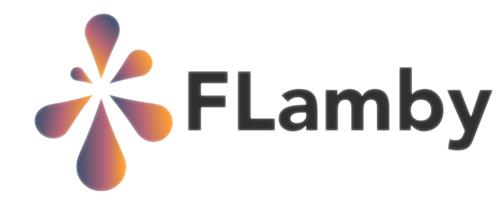

Welcome to FLamby’s documentation!
FLamby
{kind=link}
FLamby [1] is a repository regrouping several distributed datasets with natural splits whose aim is to facilitate benchmarking new cross-silo FL strategies on realistic problems.
You can find a link to the companion paper published at NeurIPS 2022 in the Dataset and Benchmark track here
If you use FLamby please consider citing it:
@inproceedings{NEURIPS2022_232eee8e,
author = {Ogier du Terrail, Jean and Ayed, Samy-Safwan and Cyffers, Edwige and Grimberg, Felix and He, Chaoyang and Loeb, Regis and Mangold, Paul and Marchand, Tanguy and Marfoq, Othmane and Mushtaq, Erum and Muzellec, Boris and Philippenko, Constantin and Silva, Santiago and Tele\'{n}czuk, Maria and Albarqouni, Shadi and Avestimehr, Salman and Bellet, Aur\'{e}lien and Dieuleveut, Aymeric and Jaggi, Martin and Karimireddy, Sai Praneeth and Lorenzi, Marco and Neglia, Giovanni and Tommasi, Marc and Andreux, Mathieu},
booktitle = {Advances in Neural Information Processing Systems},
editor = {S. Koyejo and S. Mohamed and A. Agarwal and D. Belgrave and K. Cho and A. Oh},
pages = {5315--5334},
publisher = {Curran Associates, Inc.},
title = {FLamby: Datasets and Benchmarks for Cross-Silo Federated Learning in Realistic Healthcare Settings},
url = {https://proceedings.neurips.cc/paper_files/paper/2022/file/232eee8ef411a0a316efa298d7be3c2b-Paper-Datasets_and_Benchmarks.pdf},
volume = {35},
year = {2022}
}
FLamby is more a dataset suite than a pure code repository. Mainly we provide code to easily access datasets stored in other repositories and make them FL-ready. In particular, we do not distribute datasets in this repository, and we do not own copyrights on any of the datasets.
The use of any of the datasets included in FLamby requires accepting its corresponding license on the original website. We refer to each corresponding dataset’s sections for more informations on its terms of use.
For any problem or question with respect to any license related matters, please open a github issue on this repository.
Before jumping to the Quickstart , make sure FLamby is properly installed following the steps highlighted in Installation
Team
This repository was created thanks to the contributions of many researchers and engineers. We list them in the order of the companion article, following the CREDIT framework: Jean Ogier du Terrail, Samy-Safwan Ayed, Edwige Cyffers, Felix Grimberg, Chaoyang He, Régis Loeb, Paul Mangold, Tanguy Marchand, Othmane Marfoq, Erum Mushtaq, Boris Muzellec, Constantin Philippenko, Santiago Silva, Maria Telenczuk, Shadi Albarqouni, Salman Avestimehr, Aurélien Bellet, Aymeric Dieuleveut, Martin Jaggi, Sai Praneeth Karimireddy, Marco Lorenzi, Giovanni Neglia, Marc Tommasi, Mathieu Andreux.
Acknowledgements
FLamby’s initiative was made possible thanks to the support of the following institutions: - Owkin - Inria - Ecole polytechnique - University of California - Berkeley - University of Southern California (USC) - EPFL - Universitätsklinikum Bonn
Footnotes
Installation
Getting Started Instructions
Datasets informations
Integration with FL-frameworks
Reproducible results with docker
Reproducing results
FAQ
- FAQ
- How can I do a clean slate?
- I get an error when installing Flamby
- I am installing Flamby on a machine equipped with macOS and an intel processor
- I or someone else already downloaded a dataset using another copy of the flamby repository, my copy of flamby cannot find it and I don’t want to download it again, what can I do ?
- Collaborative work on FLamby: I am working with FLamby on a server with other users, how can we share the datasets efficiently ?
- Can I run clients in different threads with FLamby? How does it run under the hood?
- Does FLamby support GPU acceleration?
Extending FLamby
Code Documentation